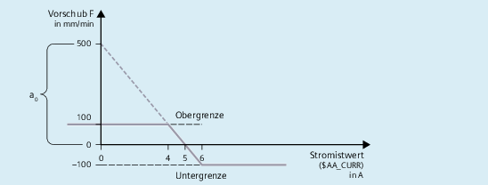
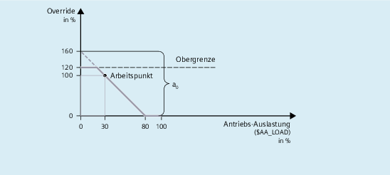

Mit der Funktion SYNFCT kann im Hauptlauf eine Variable gelesen, diese über ein Polynom bewertet und das Ergebnis in eine andere Variable geschrieben werden. Anwendungsbeispiele:
Vorschub in Abhängigkeit von der Antriebsauslastung
Position in Abhängigkeit von einem Sensorsignal
Laser-Leistung in Abhängigkeit von der Bahngeschwindigkeit
SYNFCT(<Poly_Nr>,<SysVar_Out>,<SysVar_In>)
Parameter | Bedeutung |
|---|---|
| Nummer des mit |
| Systemvariable, Ausgang: |
| Systemvariable, Eingang: |
Zu | |
Zum programmierten Vorschub (F-Wort) wird ein Überlagerungswert addiert:
Fwirksam = Fprogrammiert + FAC
| Bedeutung |
|---|---|
$AC_VC | additiver Bahnvorschub-Override |
$AA_VC[Achse] | additiver axialer Vorschub-Override |
Eingangswert sei der Stromistwert $AA_CURR der X-Achse.
Der Arbeitspunkt wird auf 5 A festgelegt.
Der Vorschub darf ±100 mm/min verändert werden, wobei die Abweichung des axialen Stromes ±1 A betragen darf.
Beispiel: Additive Beeinflussung des Bahnvorschubs
Bestimmung der Parameter der Funktion FCTDEF:
| |
| = 1 (beispielhaft) |
| = -100 |
| = 100 |
Polynom: f(x) = a0 + a1x +a2x2 + a3x3 | |
a0: | 1 / 100 = 5 / a0 ⇒ a0 = 500 |
a1 | = 100 mm/min / -1 A = -100 [mm/min / A] |
a2 | = 0 (kein quadratisches Glied) |
a3 | = 0 (kein kubisches Glied) |
Berechnung des Überlagerungswertes:
| |
| = 1 |
| $AC_VC |
| $AA_CURR (Antriebs-Stromistwert) |
Programmierung:
| Programmcode | |
|---|---|
| N100 FCTDEF(1, -100, 100, 500, -100) | |
| N110 ID=1 DO SYNFCT(1, $AC_VC[X], $AA_CURR[X]) |
Der programmierte Vorschub wird mit einem prozentualen Faktor multipliziert (zusätzlicher Override):
Fwirksam = Fprogrammiert * FaktorAC
| Bedeutung |
|---|---|
$AC_OVR | Bahn-Override über Synchronaktion vorgebbar |
Eingangswert sei die prozentuale Antriebsauslastung $AA_LOAD der X-Achse.
Der Arbeitspunkt wird auf 100% bei 30%-iger Auslastung des Antriebs festgelegt.
Bei 80%-iger Auslastung soll die Achse stehen.
Eine Überhöhung der Geschwindigkeit wird mit +20% der programmierten Geschwindigkeit zugelassen.
Beispiel: Multiplikative Beeinflussung
Bestimmung der Parameter der Funktion FCTDEF:
| |
| = 2 (beispielhaft) |
| = 0 |
| = 120 |
Polynomy: f(x) = a0 + a1x +a2x2 + a3x3 | |
a0: | 50 / 100 = 80 / a0 ⇒ a0 = 160 |
a1 | = 100 % / -50 % = -2 |
a2 | = 0 (kein quadratisches Glied) |
a3 | = 0 (kein kubisches Glied) |
Berechnung des Überlagerungswertes:
| |
| = 2 |
| $AC_OVR |
| $AA_LOAD (Antriebsauslastung) |
Programmierung:
| Programmcode | |
|---|---|
| N100 FCTDEF(2, 0, 120, 160, -2) | |
| N110 ID=1 DO SYNFCT(2, $AC_OVR[X], $AA_LOAD[X]) |
Abstandsregelung: Prinzip
Die Abstandsregelung der Zustellachse Z wird über die Funktionen FCTDEF und SYNFCT sowie den Systemvariablen $AA_OFF und $A_INA durchgeführt.
Randbedingungen:
Die Analogspannung des Abstandssensors wird über den Analogeingang $A_INA[3] angeschlossen.
Die Lageabweichungen werden in $AA_OFF aufsummiert (integriert):
MD36750 $MA_AA_OFF_MODE, Bit 0 = 1
Bei Überschreitung des oberen Grenzwertes der Z-Achse vom 1 mm wird die X-Achse angehalten:
SD43350 $SA_AA_OFF_LIMIT[Z] = 1
Siehe dazu auch Kapitel "Überlagerte Bewegungen ($AA_OFF)".
| Hinweis |
$AA_OFF wirkt im Basiskoordinatensystem (BKS)Die Korrektur wirkt vor der kinematischen Transformation im Basiskoordinatensystem (BKS). Das Beispiel kann daher nicht für eine Abstandsregelung in Orientierungsrichtung des Werkzeuges (Werkstückkoordinatensystem WKS) verwendet werden. Zu Abstandsregelung mit hohen Dynamikanforderungen oder 3D-Abstandsregelung siehe: Weitere Informationen Funktionshandbuch Technologien Anwenderspezifische ReaktionenMit Erreichen des Grenzwerts SD43350 $SA_AA_OFF_LIMIT können anwenderspezifische Reaktionen ausgelöst werden z.B.:
|
Abstandsregelung
Bestimmung der Parameter der Funktion FCTDEF:
| |
| = 1 (beispielhaft) |
| = 0,2 |
| = 0,5 |
Polynomy: f(x) = a0 + a1x +a2x2 + a3x3 | |
a0: | 10 / x = 20 / 0,3 ⇒ a0 = x + 0,2 = 0,15 + 0,2 = 0,35 |
a1 | = 0,15 mm / 10 V = 1,5 * 10-2 mm/V |
a2 | = 0 (kein quadratisches Glied) |
a3 | = 0 (kein kubisches Glied) |
Berechnung des Überlagerungswerts:
| |
| = 1 |
| $AA_OFF |
| $A_INA (Analoger Eingang) |
Programmierung:
| Programmcode: %_N_AON_SPF | Kommentar |
|---|---|
| PROC AON | ; Abstandsregelung "EIN" |
| FCTDEF(1, 0.2, 0.5, 0.35, 1.5 EX-2) | ; Polynomdefinition |
| ID=1 DO SYNFCT(1, $AA_OFF[Z], $A_INA[3]) | ; Abstandsregelung |
| ID=2 WHENEVER $AA_OFF_LIMIT[Z]<>0 DO $AA_OVR[X] = 0 | ; Grenzwertprüfung |
| RET | |
| ENDPROC | |
| Programmcode: %_N_AOFF_SPF | Kommentar |
|---|---|
| PROC AOFF | ; Abstandsregelung "AUS" |
| CANCEL(1) | ; Abstandsregelung löschen |
| CANCEL(2) | ; Grenzwertprüfung löschen |
| RET | |
| ENDPROC | |
| Programmcode: %_N_MAIN_MPF | Kommentar |
|---|---|
| N100 $SA_AA_OFF_LIMIT[Z]=1 | |
| N110 AON | ; Abstandsregelung "EIN" |
| ... | |
| N200 G1 X100 F1000 | |
| N210 AOFF | ; Abstandsregelung "AUS" |
| M30 | |
Siehe auch:
Online-Werkzeugkorrektur (FTOC)